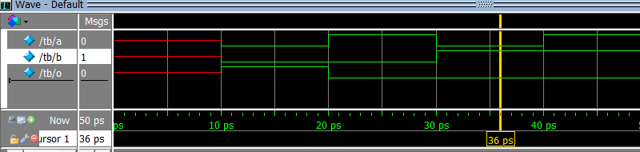
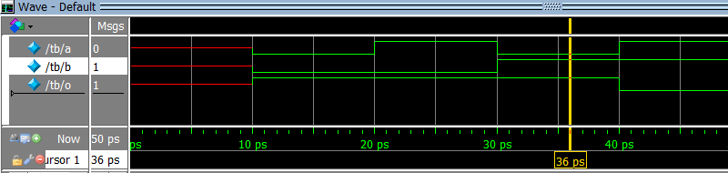
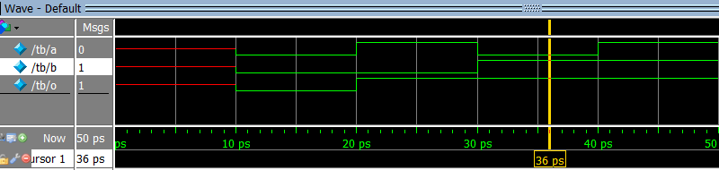
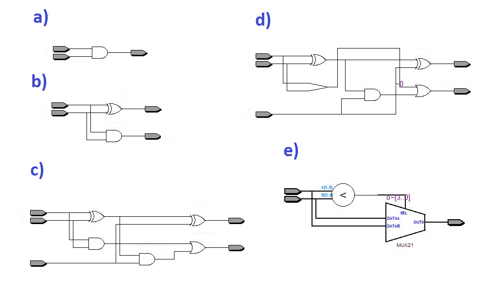
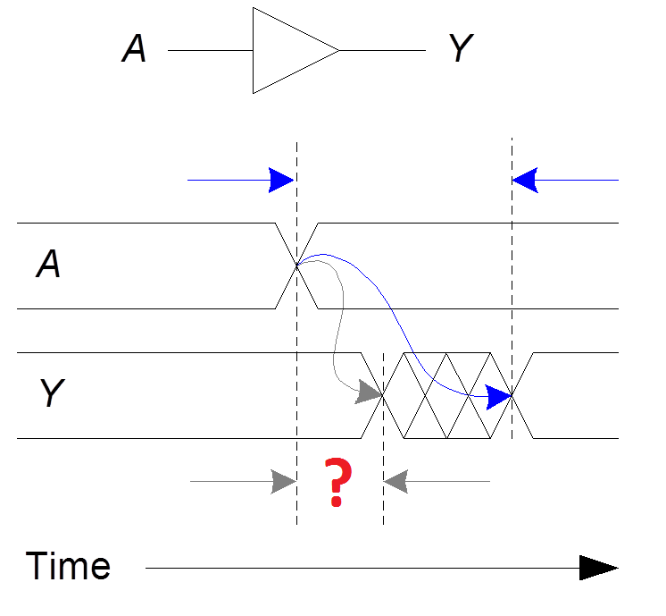

EE553 Quiz May 30 2015 Name ____________________________________ Student ID __________________
1. Relative sizes of the industries
a) Electronic industry ~$20T,
Semiconductor / chip making industry ~$30B,
Electronic Design Automation industry ~$80B,
Semiconductor Intellectual Property (SIP) ~$40B
b) Electronic industry ~$2T,
Semiconductor / chip making industry ~$30B,
Electronic Design Automation industry ~$800B,
Semiconductor Intellectual Property (SIP) ~$40B
c) Electronic industry ~$2T,
Semiconductor / chip making industry ~$300B,
Electronic Design Automation industry ~$8B,
Semiconductor Intellectual Property (SIP) ~$4B
d) Electronic industry ~$200B,
Semiconductor / chip making industry ~$30B,
Electronic Design Automation industry ~$8B,
Semiconductor Intellectual Property (SIP) ~$4B
e) Electronic industry ~$200B,
Semiconductor / chip making industry ~$3B,
Electronic Design Automation industry ~$8B,
Semiconductor Intellectual Property (SIP) ~$40B
2. What is the meaning of abbreviation EDA in this course?
a) Electronic Design Automation
b) Event Driven Architecture
c) Equipment Data Acquisition
3. Which step in EDA Flow is used to determine the locations of the design
logic blocks and connecting wires on the phisycal chip
a) Simulation
b) Synthesis
c) Place and Route
4. What is the generic term used to describe an integrated circuit designed to
be configured by a customer or a designer after manufacturing?
a) Application-Specific Integrated Circuit - ASIC
b) Field-Programmable Gate Array - FPGA
c) Hardware Description Language - HDL
d) Register Transfer Level - RTL
e) System-on-Chip - SoC
5. Which waveform is the result of the simulation below?
module design (input a, input b, output o);
assign o = a & b;
endmodule
module tb;
logic a, b, o;
design design_inst (a, b, o);
initial
begin
$dumpvars;
$monitor ("%t a %b b %b o %b", $time, a, b, o);
#10;
a = 0; b = 0; #10;
a = 1; b = 0; #10;
a = 0; b = 1; #10;
a = 1; b = 1; #10;
end
endmodule
a)
b)

c)

d)

e)
6. What is the result of synthesis of this module?
module design
(
input a,
input b,
input carry_in,
output sum,
output carry_out
);
wire p = a ^ b;
wire q = a & b;
assign sum = p ^ carry_in;
assign carry_out = q | (p & carry_in);
endmodule

7. What kind of delay is illustrated on the picture below (marked by "?")?
a) Propagation delay: tpd = max delay from input to output
b) Contamination delay: tcd = min delay from input to output

Test written by Yuri Panchul
Sources of pictures:
Slides from Steve Harris and Sarah Harris that accompany textbook
Digital Design and Computer Architecture, Second Edition by David Harris and Sarah Harris, 2012